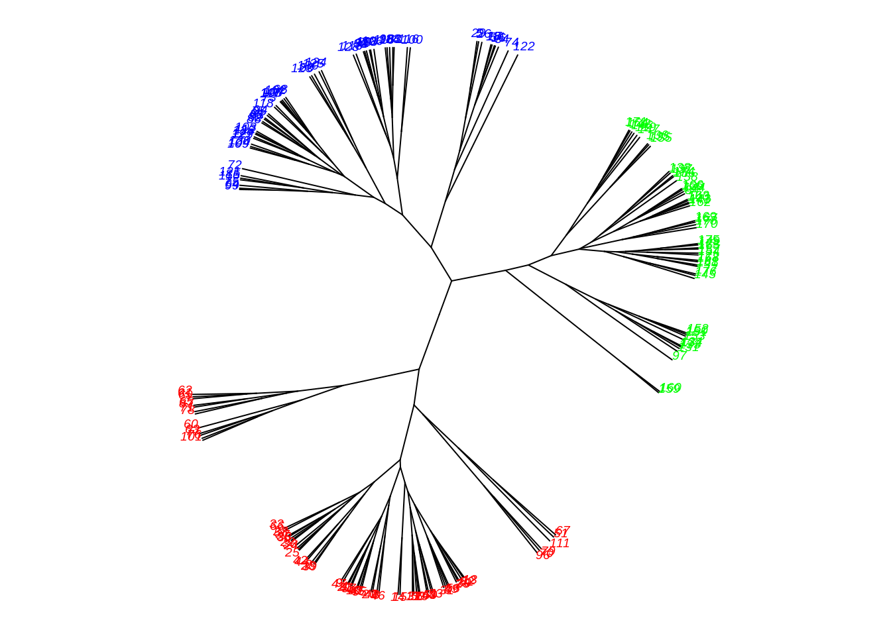

Función agnes y hclust
Dataset
Utilizaremos el dataset winedel paquete datasetsICR. Este dataset contiene datos de 178 vinos italianos con 13 componentes. Los vinos se clasifican en 3 clases, dependiendo del cultivo.
library ( datasetsICR )
data("wine")
str (wine)## 'data.frame': 178 obs. of 14 variables:
## $ Class : int 1 1 1 1 1 1 1 1 1 1 ...
## $ Alcohol : num 14.2 13.2 13.2 14.4 13.2 ...
## $ Malic acid : num 1.71 1.78 2.36 1.95 2.59 1.76 1.87 2.15 1.64 1.35 ...
## $ Ash : num 2.43 2.14 2.67 2.5 2.87 2.45 2.45 2.61 2.17 2.27 ...
## $ Alcalinity of ash : num 15.6 11.2 18.6 16.8 21 15.2 14.6 17.6 14 16 ...
## $ Magnesium : int 127 100 101 113 118 112 96 121 97 98 ...
## $ Total phenols : num 2.8 2.65 2.8 3.85 2.8 3.27 2.5 2.6 2.8 2.98 ...
## $ Flavanoids : num 3.06 2.76 3.24 3.49 2.69 3.39 2.52 2.51 2.98 3.15 ...
## $ Nonflavanoid phenols : num 0.28 0.26 0.3 0.24 0.39 0.34 0.3 0.31 0.29 0.22 ...
## $ Proanthocyanins : num 2.29 1.28 2.81 2.18 1.82 1.97 1.98 1.25 1.98 1.85 ...
## $ Color intensity : num 5.64 4.38 5.68 7.8 4.32 6.75 5.25 5.05 5.2 7.22 ...
## $ Hue : num 1.04 1.05 1.03 0.86 1.04 1.05 1.02 1.06 1.08 1.01 ...
## $ OD280/OD315 of diluted wines: num 3.92 3.4 3.17 3.45 2.93 2.85 3.58 3.58 2.85 3.55 ...
## $ Proline : int 1065 1050 1185 1480 735 1450 1290 1295 1045 1045 ...Debido a que los valores están en distintas escalas, estandarizaremos los datos. Luego utilizaremos la distancia Euclideana para obtener la matriz de distancias.
Estandarización
wine.Z <- scale(wine[,2: ncol(wine)],center = TRUE, scale = TRUE)Cálculo de la matriz de distancias
La matriz de distancias la podemos obtener de diversas formas
#Con la función dist
D.wine <- dist(x=wine.Z,method = "euclidean")
#Con la función daisy
library(cluster)
D.wine.bis <- daisy(x=wine.Z, metric = "euclidean")Podemos comprobar que el resultado es el mismo
sum(abs(D.wine - D.wine.bis))## [1] 0Observación: daisy permite estandarizar, pero estandariza despues de calcular las distancias, por lo que no se obtiene el mismo resultado, es preferible estandarizar antes.
agnes
El paquete agnes acepta tanto una matriz de distancia, como un dataframe con los valores. En el caso de una matriz de distancia, automaticamente la detecta y se obtiene diss=TRUE. En caso de ser un dataframe, automaticamente lo detecta y se obtiene diss=FALSE.
Al utilizar agnes con un dataframe por defecto utiliza la metrica Euclideana. Por defecto utiliza el método average linkage
res.agnes <- agnes(x=wine.Z , diss = FALSE)
res.agnes.2 <- agnes(x=D.wine, diss = TRUE )Agnes retorna 8 componentes. Los mas importantes son order, height y merge
names(res.agnes)## [1] "order" "height" "ac" "merge" "diss" "call" "method" "data"Merge es una matriz de \((n-1) \times 2\). En la fila \(i\), las columnas 1 y 2 representan los cluster que se unieron en el paso \(i\). Veamos 10 pasos
res.agnes$merge[1:10,]## [,1] [,2]
## [1,] -10 -48
## [2,] -132 -134
## [3,] -12 -13
## [4,] -16 -54
## [5,] -93 -108
## [6,] -35 -38
## [7,] -1 -21
## [8,] -17 -18
## [9,] -165 -173
## [10,] -23 -30height guarda las distancias en cada paso, estos valores no los usamos directamente al igual que order. Si no que los usamos para el dendrograma.
Dendrograma
El dendrograma es un arbol, util para graficar el analisis jerarquico. El problema es que mientras aumenta \(n\) se vuelve engorroso. Graficamente podemos trazar una linea horizontal dependiendo de cuantos cluster queramos, de esta forma en el eje de valores podemos ver que valores pertenecen al cluster.
plot(res.agnes ,which.plots=2 , main = "Average")Podemos eliminar los labels con labels=FALSE
plot(res.agnes ,which.plots=2 , labels=FALSE, main = "Average")El coeficiente de aglomeración aparece abajo del grafico, su uso parece ser de ayuda limitada ya que el valor del coeficiente crece con \(n\). Por lo tanto, el coeficiente no debe usarse para comparar soluciones de conjuntos de datos de tamaños muy diferentes.
Podemos cambiar la forma del dendrograma
plot(as.dendrogram(res.agnes), type = "triangle", ylab = "Height")
Debido a que al tener tantos valores no se puede visualizar correctamente, podemos usar zoom
plot(as.dendrogram(res.agnes), type = "triangle",xlim = c(1, 20), ylim = c(1,8))hclust
Utilizando los mismos datos ahora utilizaremos la función hclust. Esta función a diferencia de agnes utiliza por defecto el método complete linkage
res.hclust <- hclust(d=D.wine)Esta función retorna 7 componentes. Al igual que con agnes, tiene merge, height y order
names(res.hclust)## [1] "merge" "height" "order" "labels" "method"
## [6] "call" "dist.method"plot(res.hclust , main = " Complete" )plot(as.dendrogram(res.hclust), type = "triangle", ylab = "Height")Al tener muchos datos no es posible visualizar correctamente las etiquetas por lo que podemos hacer zoom
plot(as.dendrogram(res.hclust), xlim = c(1, 20), ylim = c(1,8))El dendograma para hclust puede ser mejorado con varios paquetes (lamentablemente hasta el momento no encontré paquetes para mejorar en dendrograma de agnes)
Variantes de los dendrogramas (hclust)
Paquete ape
Con el paquete ape podemos hacer gráficos mas avanzados y además podemos pintar los clusters mediante la función cutree del paquete stats. Eligiremos 3 clusters
library("ape")
colors = c("red", "blue", "green", "black")
clus3= cutree(res.hclust, 3)
plot(as.phylo(res.hclust), type = "fan", tip.color = colors[clus3], label.offset = 1, cex = 0.7)Raices con libreria ape (hclust)
plot(as.phylo(res.hclust), type = "unrooted", tip.color = colors[clus3], cex = 0.6, no.margin = TRUE)
Radial con paquete ape (hclust)
plot(as.phylo(res.hclust), type = "radial")Tambien mediante el paquete ape
plot(as.phylo(res.hclust), type = "cladogram", cex = 0.6,
edge.color = "steelblue", edge.width = 2, edge.lty = 2,
tip.color = "steelblue")
Otro paquete para mejorar la visualización es ggdendro el cual utiliza ggplot2.
Mediante el paquete dendextend se pueden hacer dendrogramas completamente personalizados, por ahora dejo este link sobre visualización y personalización de dendrogramas.
Ejemplos avanzados con dendextend
library(dendextend)##
## ---------------------
## Welcome to dendextend version 1.15.1
## Type citation('dendextend') for how to cite the package.
##
## Type browseVignettes(package = 'dendextend') for the package vignette.
## The github page is: https://github.com/talgalili/dendextend/
##
## Suggestions and bug-reports can be submitted at: https://github.com/talgalili/dendextend/issues
## Or contact: <tal.galili@gmail.com>
##
## To suppress this message use: suppressPackageStartupMessages(library(dendextend))
## ---------------------##
## Attaching package: 'dendextend'## The following objects are masked from 'package:ape':
##
## ladderize, rotate## The following object is masked from 'package:stats':
##
## cutreedend <- USArrests[1:5,] %>% scale %>%
dist %>% hclust %>% as.dendrogram
# Color labels by specifying the number of cluster (k)
dend %>% set("labels_col", value = c("green", "blue"), k=2) %>%
plot(main = "Color labels \nper cluster")
abline(h = 2, lty = 2)Número optimo de Clusters
En el datasets que estamos usando conocemos el numero de clusters, pero no siempre tendremos este dato. Muchas veces tendremos que decidir cuantos clusters utilizar. Frecuentemente se utiliza el dendrograma para decidir. Muchas veces el numero de clusters se elige por interes externos, por ejemplo el equipo de marketing necesita encontrar 3 grupos para focalizar ventas.
Como vimos anteriormente cutree del paquete stats permite cortar el arbol. Ademas podemos crear una matriz de confusión
cluster.hclust<-cutree(res.hclust , k = 3)
table(cluster.hclust , wine$Class)##
## cluster.hclust 1 2 3
## 1 51 18 0
## 2 8 50 0
## 3 0 3 48Notemos que utilizando el algoritmo jerárquico aglomerativo con método complete linkage obtenemos 29 errores. Es decir, un 16% de los datos fueron erronamente clasificados.
res.hclust.single<- hclust(d=D.wine, method = "single")
plot(res.hclust.single, main = "Single")
res.hclust.ward<-hclust(d=D.wine ,method = "ward.D2")
plot(res.hclust.ward , main = "Ward")Notemos que el simple linkage obtiene clusters dispersos, mientras que el método Ward’s obtiene 3 clusters bien separados.
cluster.hclust.ward <- cutree(res.hclust.ward,k = 3)
table(cluster.hclust.ward, wine$Class)##
## cluster.hclust.ward 1 2 3
## 1 59 5 0
## 2 0 58 0
## 3 0 8 48Con este método nos equivocamos en 13 valores.
El paquete mclust tiene la función AdjustedRandIndex (ARI) (parecido al accuracy en predicciones). El ARI permite comparar dos modelos (similares si es cercano a 1) y como score.
https://en.wikipedia.org/wiki/Rand_index
library(mclust)
adjustedRandIndex(cluster.hclust, wine$Class)## [1] 0.5771436adjustedRandIndex(cluster.hclust.ward, wine$Class)## [1] 0.7899332Para calcular las medias de los químicos de los vinos en cada cluster podemos utilizar la siguiente función
k <- 3
mean.cluster <- t(sapply(X = 1:k, FUN = function(nc)
+ apply(wine[cluster.hclust.ward == nc , 2: ncol(wine)],2,mean)))
round(mean.cluster , 2)## Alcohol Malic acid Ash Alcalinity of ash Magnesium Total phenols
## [1,] 13.67 1.97 2.46 17.53 106.16 2.85
## [2,] 12.20 1.94 2.22 20.21 92.55 2.26
## [3,] 13.06 3.17 2.41 21.00 99.86 1.69
## Flavanoids Nonflavanoid phenols Proanthocyanins Color intensity Hue
## [1,] 3.01 0.29 1.91 5.45 1.07
## [2,] 2.09 0.36 1.69 2.90 1.06
## [3,] 0.85 0.45 1.13 6.85 0.72
## OD280/OD315 of diluted wines Proline
## [1,] 3.16 1076.05
## [2,] 2.86 501.43
## [3,] 1.73 624.95Mediante esta tabla podemos descrubir que el cluster 1 tiene altos valores en promedio para el Alcohol, Magnesium, Proanthocyanins, OD280/OD315 of diluted wines y Proline y bajos valores en promedio de Alcalinity of ash y Nonflavanoid phenols.